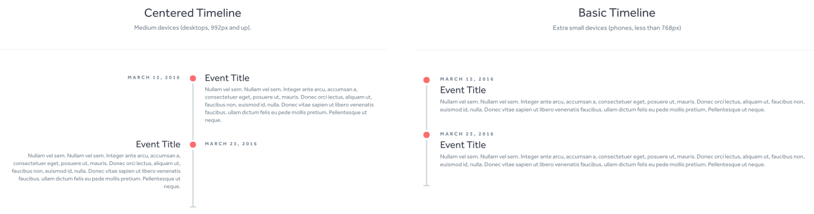

December 2019
In September of 2015, I purchased the domain matthewseligson.com with no plan for using it. In early December of 2019, a use became clear: to make a portfolio of projects, some personal and others academic or professional. Here I describe the process of building this site.
I wanted my portfolio to illustrate a progression of skill and interests over time so I looked into templates with timeline themes and settled on this one by Brady Wright. This template included code for a centered timeline and a basic timeline. I felt that the centered timeline lent itself better to the homepage listing all major projects and that the basic timeline could be repurposed to a bullet-point-like "Read More" page like this one.
"Read More" buttons like the one below were not included in the template but were simple enough to create using the same color scheme from the original template. I just changed the hover opacity to be 20% less than the original.
Read MoreGithub repo links like the one below were also straightforward; I went to the GitHub website and inspected the front page to find that the Octicon logo was an SVG. I use that exact svg code to create these buttons.
All figures I used on "Read More" pages were created using Google Drawings. This was by no means the ideal tool, but it allowed me to create drawings quickly and export as SVG's which I found were particularly nice on web pages.